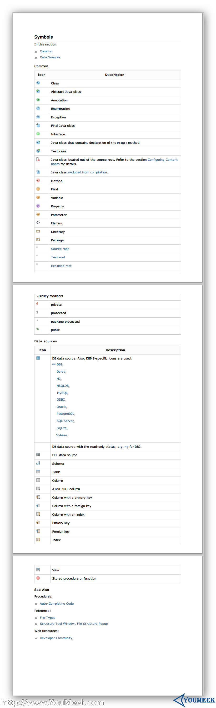
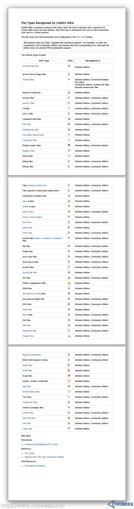
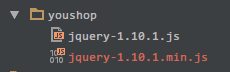

11 常见文件类型的图标介绍
Java 类相关图标介绍

图片 11.1 Java 类相关图标介绍
- 官网地址：http://www.jetbrains.com/idea/webhelp/symbols.html
- 对于各个图标，上图的
Description写得非常详细，但是有几个还是需要进行特别的说明下。
Source root，你可以理解为源目录，源码的作用就是用来专门放 Java 类文件，相对于编译出来的 class 文件而言，它就是源。我们一般默认名字叫src的目录就是源目录，但是其实并不是这样的，在 IntelliJ IDEA 中，即使叫srcs也是可以设置为Source root，所以源目录跟目录命名是没有关系的，而是在于 IntelliJ IDEA 支持对任意目录进行设置为Source root，具体设置在会后面章节进行详解。Source root的作用是标记该目录下的文件是可编译的。
Java class located out of the source root，由于上一条我们知道Source root目录是用来告诉 IntelliJ IDEA 这是编译目录，而假如你 Java 类文件没有放在该目录或是该目录的子包下，那该 Java 类则无法编译，就会被表示成这个图标。
各类文件类型图标介绍

图片 11.4 各类文件类型图标介绍
- 官网地址：http://www.jetbrains.com/idea/webhelp/file-types-recognized-by-intellij-idea.html
- 对于各个图标，上图的介绍得非常清楚，我这边只做一个类型文件的补充。
- JavaScript 两种图标介绍
- 如上图所示，对于压缩过的 JavaScript 文件，图标会有
010图案。